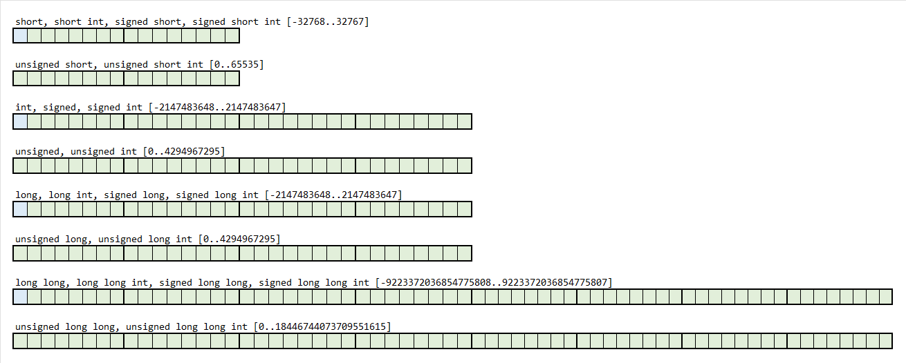

Целобројни променљиви и непроменљиви подаци#
Декларација целобројних променљивих#
Све променљиве које ћеш користити у програму прво мораш декларисати.
Декларација садржи тип и један или више идентификатора. Ако у декларацији има
више идентификатора, онда идентификаторе одвајаш оператором ,. Декларација
променљивих може да има следећи општи облик:
tip identifikator;
односно
tip identifikator_1, identifikator_2, ... identifikator_n;
Променљиве целобројног типа најчешће ћеш декларисати коришћењем кључне речи
int.
Напиши програм у програмском језику C у којем су декларисане променљиве које ће чувати тренутне температуре у Београду и Вршцу изражене као цели бројеви у степенима целзијуса.
#include <stdio.h>
int main(void)
{
int b;
int v;
return 0;
}
или
#include <stdio.h>
int main(void)
{
int b, v;
return 0;
}
У оба случаја целобројне променљиве b и v декларисане су на исправан начин
и можеш их даље користити у функцији main().
Целобројна променљива типа int у меморији рачунара заузима 4 бајта. Пошто
један бајт има 8 бита, то значи да целобројна променљива заузима 32 бита у
меморији рачунара. Код променљивих типа int први бит од 32 бита резервисан је
за знак, што значи да за представљање броја остаје још 31 бит. Због тога је
опсег вредности које можеш представити променљивом типа int од \(-2^{31}\) до
\(2^{31}-1\), односно од \(-2147483648\) до \(2147483647\).
Модификатори#
Може се десити да ти приликом решавања некод задатка не треба променљива за
чување великих целобројних вредности, односно, може се десити да ти је потребна
променљива која треба да чува вредност много већу од оне предвиђене опсегом.
Може се десити и да си сигуран да ће вредност променљиве увек бити позитиван
цео број, односно, да ти одговара да променљива може бити позитиван или
негативан цео број. За наведене случајеве у програмском језику C користе се
модификатори. Модификатори за целобројни тип int су signed, unsigned,
short и long.
Модификатором signed (срп. означен) наглашава се да цео број има знак,
односно, модификатором unsigned (срп. неозначен) да нема тј. да је увек
позитиван. Коришћењем модификатора unsigned ослобађа се бит који се чува за
знак, чиме се повећава опсег вредности које промељива може да добије, па тако,
неозначена целобројна променљива може да добије вредност од \(0\) до
\(4,294,967,295\), односно од \(0\) до \(2^{32}-1\).
Модификатор short (срп. кратак) дупло смањује количину меморије која се
додељује целобројној променљивој. Модификатор long (срп. дугачак) дупло
повећава количину меморије која се додељује целобројној променљивој, а
модификатор long long (срп. двоструко дугачак) четвороструко. Треба
напоменути да је у свим савременим C компајлерима променљива типа short int
величине 2 бајта, променљива типа int 4 бајта, променљива типа long int
и даље 4 бајта, док је променљива типа long long int величине 8 бајтова.
Модификатори signed и unsigned се могу комбиновати са модификаторима
short, long и long long па увек можеш одабрати тип који ти највише
одговара за конкретан случај.
Када се декларишу подаци са модификаторима, није увек обавезно записати и
модификаторе и тип. На пример, тип података int може да има и негативне и
позитивне вредности што значи да означен, па се променљива типа int може
декларисати као signed int или као signed. Сва три случаја су еквивалентна
и валидна.
Напиши програм у програмском језику C у којем је декларисана променљива која
ће чувати редни број дана у месецу. Редни број дана у месецу је увек позитиван
цео број који не може бити већи од \(31\). Према томе, променљиву која треба да
чува редни број дана у месецу можеш декларисати са unsigned short.
#include <stdio.h>
int main(void)
{
unsigned short dan; // rezervisano 2 bajta u memoriji
return 0;
}
Неће бити грешка уколико је декларишеш са int, али си таквом декларацијом
непотребно заузео дупло више меморије.
#include <stdio.h>
int main(void)
{
int dan; // rezervisano 4 bajta u memoriji
return 0;
}
Напиши програм у програмском језику C у којем је декларисана променљива која
ће чувати губитак или добитак у пословању једне веће компаније изражен у
динарима. Супротно претходном задатку, ако је у питању годишње пословање неке
веће компаније, опсег вредности од \(-2,147,483,648\) до \(2,147,483,647\) може да
буде недовољан. Ако вредност изађе из дозвољеног опсега доћи ће до грешке и
пуцања програма. У овом случају требаш користити модификатор long long.
#include <stdio.h>
int main(void)
{
long long poslovanje; // rezervisano 8 bajtа u memoriji
return 0;
}
У табели у прилогу наведене су све дозвољене комбинације модификатора целобројног типа, потребна количина меморије у бајтовима и опсези дозвољених вредности.
Модификатори целобројног типа дозвољавају ти да декларишеш променљиве које заузимају 2, 4 или 8 бајтова у меморији, од чега један бит може бити резервисан за знак:
{kind=link}
Као што је већ напоменуто, опсег вредности за податке зависи од декларације,
али зависи и од компајлера! У одређеној литератури или на интернету можеш
прочитати да целобројна вредност типа int заузима два бајта у меморији
рачунара што је нетачно. Наведена вредност од два бајта је заправо минимална
вредност по стандарду, док је та вредност данас увек четири.
Уколико желиш да провериш минималне и максималне вредности које може да има податак целобројног типа на твом рачунарском систему са C компајлером којег ти користиш, то можеш урадити извршавањем програма датог у прилогу.
Иницијализација целобројних променљивих#
Иницијализацијом променљивих, променљивама додељујеш почетне вредности.
Иницијализација садржи тип, идентификатор, оператор доделе = и одговарајућу
вредност и има следећи општи облик:
tip identifikator = vrednost;
Слично као код декларације променљивих, истовремено можеш иницијализовати више променљивих. Тада иницијализација има следећи општи облик:
tip identifikator_1 = vrednost_1, identifikator_2 = vrednost_2, ... identifikator_n = vrednost_n;
Обрати пажњу да знак = у програмском језику C представља оператор доделе
којим се, у овом случају, вредност са десне стране додељује променљивој на
левој страни. Знак = није релациони оператор, као у математици, којим се
констатује да је лева страна једнака десној. Више о операторима научићеш у
следећем поглављу.
Напиши програм у програмском језику C у којем ћеш иницијализовати целобројне
променљиве t и v са вредностима које представљају број година које ученици
Тамара и Влада имају на данашњи дан. Нека су то вредности \(16\) и \(18\).
#include <stdio.h>
int main(void)
{
int t = 16;
int v = 18;
return 0;
}
или
#include <stdio.h>
int main(void)
{
int t = 16, v = 18;
return 0;
}
У истој линији можеш комбиновати и декларацију и иницијализацију променљивих.
Напиши програм у програмском језику C у којем ћеш иницијализовати целобројне
променљиве са вредностима које представљају број година које ученици Тамара и
Влада имају на данашњи дан (као у претходном програму) и у којем ћеш декларисати
променљиве a и b у којима ће се чувати године ученика Алисе и Боба.
#include <stdio.h>
int main(void)
{
int t = 16, v = 18, a, b;
return 0;
}
Целобројни константни подаци#
У претходној лекцији научио си како се у програмском језику C записују подаци целобројног типа у декадном, окталном и хексадекадном систему, а у овој, како се декларишу и иницијализују целобројне променљиве. Променљиве могу да мењају вредност током извршавања програма, као што променљиве у математици мењају вредност током израде задатка.
Целобројни константни податак#
Константни податак (енгл. constant) је податак чија је вредност унапред задата у програму и не може се мењати током извршавања програма. Позитивна или негативна вредност целобројног константног податка може бити задата у окталном, декадном или хексадекадном бројевном систему - исто као и вредност целобројне променљиве.
Целобројне константне податке можеш дефинисати на два начина, помоћу кључне
речи const или коришћењем препроцесорске директиве #define.
Општи облик дефиниције константног податка помоћу кључне речи const је:
const tip identifikator = vrednost;
где тип може бити основни целобројни тип int са или без signed или
unsigned, и short или long модификатором.
Напиши програм у програмском језику C у којем ћеш користити вредност брзине светлости у вакууму. Брзина светлости у вакууму је физичка константа чија се вредност не мења \(c=299792458ms^{−1}\). То значи да \(c\) требаш дефинисати као константни податак, а не као променљиву.
#include <stdio.h>
int main(void)
{
const int c = 299792458;
}
Константним подацима вредности мораш доделити у тренутку дефинисања - константни податак није могуће прво декларисати, а касније иницијализовати.
Због тога је следеће решење претходног задатка погрешно и изазваће грешку током компајлирања.
#include <stdio.h>
int main(void)
{
const int c;
c = 299792458;
}
Такође, у току програма не можеш мењати вредност константног податка па ће се и у следећем програму јавити грешка током компајлирања.
#include <stdio.h>
int main(void)
{
const int c = 0;
c = 299792458;
}
Симболичке целобројне константе#
Kонстанта дефинисана препроцесорском директивом #define назива се симболичка
константа. Општи облик дефиниције симболичке константе је:
#define IDENTIFIKATOR vrednost
Препорука је по конвенцији, али не синтаксно правило, да се идентификатори
симболичких константи пишу великим словима. Ако се идентификатор симболичке
константе састоји из више речи, онда се речи раздвајају знаком _.
Претходни задатак у програмском језику C могао си да решиш дефиницијом
симболичке константе BRZINA_SVETLOSTI_U_VAKUUMU.
#include <stdio.h>
#define BRZINA_SVETLOSTI_U_VAKUUMU 299792458
int main(void)
{
}
Можеш приметити да у општем облику дефиниције симболичке константе нигде није наведен тип. То значи да вредност симболичке константе може бити цео број, знак или реалан број - препроцесор ће сам одредити о ком типу податка је реч. Пошто се не наводи тип, не могу се наводити ни модификатори. Целобројне симболичке константе подразумевано се смештају у меморијске локације величине 4 бајта, а ако то није довољно, величина меморијске локације аутоматски ће се повећати на 8.
Симболичка константа назива се симболичка јер се њеним идентификатором,
односно симболом (који се назива и макро), замењује нека вредност. У претходном
примеру, целобројна вредност \(299792458\) замењена је симболом
BRZINA_SVETLOSTI_U_VAKUUMU. Након дефиниције симболичке константе, њен
идентификатор можеш користити било где у програму уместо вредности.
Напиши програм у програмском језику C у којем ћеш дефинисати симболичку
константу BRZINA_SVETLOSTI_U_VAKUUMU доделивши јој вредност \(299792458\), па
након тога, дефиниши константи целобројни податак c и додели му вредност
BRZINA_SVETLOSTI_U_VAKUUMU.
#include <stdio.h>
#define BRZINA_SVETLOSTI_U_VAKUUMU 299792458
int main(void)
{
const int c = BRZINA_SVETLOSTI_U_VAKUUMU;
}
Дефиницију симболичке константе можеш да поништиш препроцесорском директивом
#undef, а да ли је нека константа дефинисана или није, можеш да провериш
препроцесорским директивана #if defined(), #else и #endif.
Напиши програм у програмском језику C у којем ћеш дефинисати симболичку
константу BRZINA_SVETLOSTI_U_VAKUUMU као у претходним примерима. У функцији
main() провери да ли је симболичка константа дефинисана и на крају поништи
њену дефиницију.
#include <stdio.h>
#define BRZINA_SVETLOSTI_U_VAKUUMU 299792458
int main(void)
{
#if defined(BRZINA_SVETLOSTI_U_VAKUUMU)
printf("Definisana je");
#else
printf("Nije definisana");
#endif
#undef BRZINA_SVETLOSTI_U_VAKUUMU
}
Извршавањем програма на стандардном излазу исписаће се:
Definisana je
Извршавањем следећег програма:
#include <stdio.h>
#define BRZINA_SVETLOSTI_U_VAKUUMU 299792458
int main(void)
{
#undef BRZINA_SVETLOSTI_U_VAKUUMU
#if defined(BRZINA_SVETLOSTI_U_VAKUUMU)
printf("Definisana je");
#else
printf("Nije definisana");
#endif
}
на стандардном излазу исписаће се:
Nije definisana
јер је дефиниција поништена пре провере.